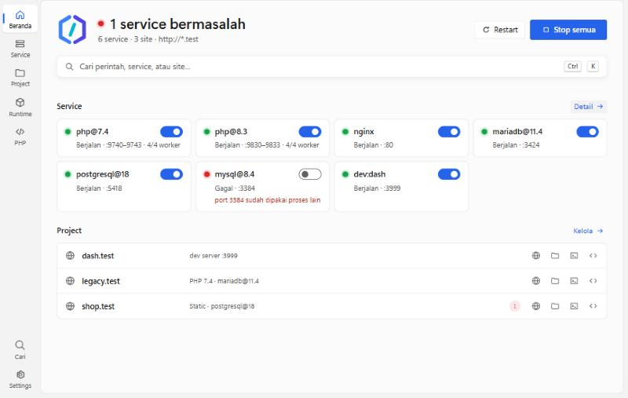
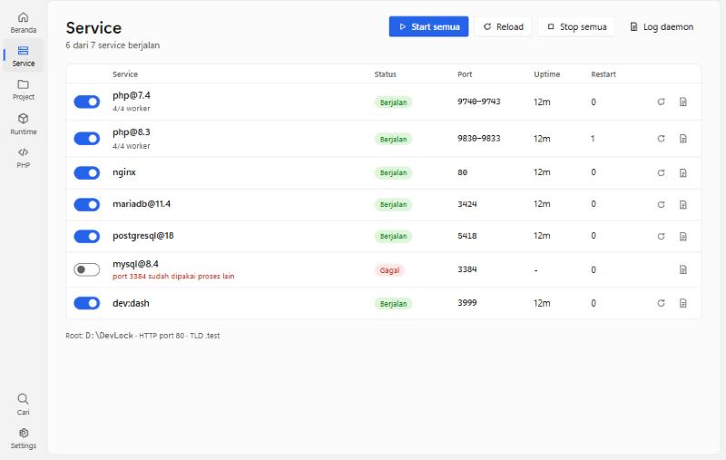
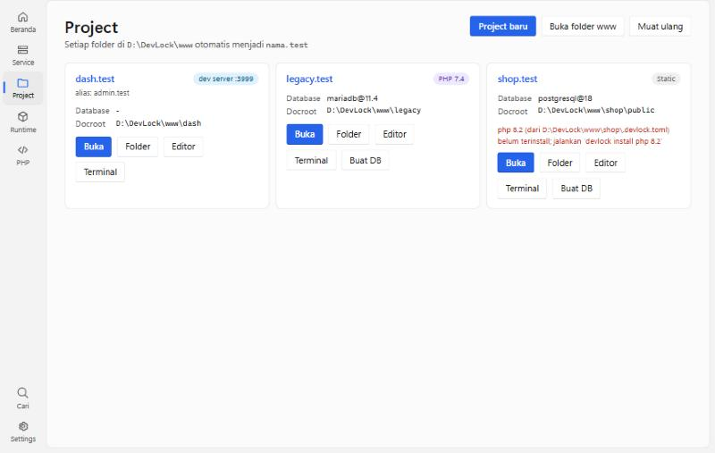

Panduan DevLock
Panduan ini menjelaskan cara memasang DevLock, menjalankan project pertama, dan memakai fitur lainnya. Semua perintah diketik di PowerShell atau Command Prompt; sebagian besar juga tersedia lewat GUI.
Persyaratan
- Windows 10 atau 11, 64-bit.
- Visual C++ Redistributable
terbaru (x64), dibutuhkan PHP dan Apache.
devlock doctormemberi tahu bila belum ada. - Port 80 (dan 443 bila memakai HTTPS) tidak dipakai program lain, misalnya IIS, Laragon, atau XAMPP.
- Koneksi internet saat mengunduh runtime. Setelah terpasang, DevLock berjalan sepenuhnya offline.
Instalasi
Unduh dari halaman Releases dan
cocokkan SHA256 file dengan isi file .sha256 di rilis yang sama.
Pilihan 1: installer (disarankan)
Jalankan devlock-vX.Y.Z-windows-x64-setup.exe. DevLock dipasang per user di
%LOCALAPPDATA%\DevLock tanpa hak admin, lengkap dengan shortcut Start Menu dan entri
di Apps & features.
Pilihan 2: portable
Ekstrak devlock-vX.Y.Z-windows-x64.zip ke folder mana saja, misalnya
D:\DevLock, lalu:
D:\DevLock\bin\devlock.exe init
Setelah memasang
Agar perintah devlock, php, composer, node, dan
lainnya bisa dipakai dari terminal mana pun, tambahkan folder shim ke PATH, lalu buka terminal baru:
devlock path add
Peringatan Windows. Rilis DevLock belum ditandatangani. SmartScreen bisa menampilkan "Windows protected your PC": pilih More info → Run anyway. Smart App Control kadang memblokir exe yang baru dirilis; biasanya hilang sendiri setelah beberapa waktu. Lihat pemecahan masalah.
Cara kerja DevLock
Semua milik DevLock tinggal di folder instalasinya:
| Folder | Isi |
|---|---|
bin\ | devlock.exe (CLI), devlock-gui.exe, devlock-shim.exe |
runtimes\ | Runtime terpasang, satu folder per versi (mis. php\8.3.12) |
www\ | Project Anda; tiap subfolder menjadi <nama>.test |
data\ | Data database, cache, dan email per instance |
shims\ | php.exe, node.exe, mysql.exe, … yang memilih versi sesuai project |
etc\, logs\, ssl\ | Konfigurasi hasil generate, log service, CA dan sertifikat |
devlock.toml | Konfigurasi global (port, TLD, versi default, dll.) |
Tiga ide utamanya:
- Versi per project. File
.devlock.tomldi folder project menentukan versi PHP, Node, database, dan lainnya. Tanpa file itu, dipakai versi default global. - Instance terpisah. Tiap versi PHP punya pool php-cgi sendiri; tiap database + versi
(
mysql@8.4,postgresql@18) punya port dan folder data sendiri. Semuanya bisa berjalan bersamaan. - Hanya yang dipakai yang berjalan.
devlock startmenjalankan nginx, pool PHP, database, cache, dan dev server yang dibutuhkan site Anda. Runtime yang terpasang tetapi tidak dipakai site mana pun tidak dijalankan.
Langkah pertama
Lihat versi yang tersedia, lalu install yang dibutuhkan. Versi pertama yang dipasang otomatis menjadi default.
devlock list php --available devlock install php 8.3 devlock install composer devlock install nginx
Buat folder www\halo berisi index.php, lalu jalankan:
devlock start devlock status
Buka http://halo.test. Saat pertama kali, DevLock meminta izin (UAC) untuk menambahkan domain
ke file hosts Windows. Agar tidak perlu lagi setiap ada project baru, aktifkan
DNS wildcard.
Hentikan semuanya dengan devlock stop, atau tombol Stop semua di GUI.
Project Laravel
Yang perlu dipasang
| Runtime | Kebutuhan | Perintah |
|---|---|---|
| PHP | Wajib | devlock install php 8.3 |
| Composer | Wajib | devlock install composer |
| nginx | Wajib | devlock install nginx |
| Database | Pilih satu | devlock install mysql 8.4 / mariadb 11.4 / postgresql 17 |
| Node.js | Untuk Vite | devlock install node 22 |
| Redis | Opsional | devlock install redis 8 |
| Mailpit | Opsional | devlock install mailpit |
Project baru
devlock new laravel toko --php 8.3 --db mysql@8.4
DevLock menjalankan composer create-project, menulis .devlock.toml, membuat
database toko, mengisi koneksi database dan APP_URL di .env, lalu
mendaftarkan toko.test. Di GUI: tab Project → Project baru.
Project yang sudah ada
Salin atau clone project ke www\toko, lalu buat www\toko\.devlock.toml:
php = "8.3" database = "mysql@8.4" cache = "redis@8" # opsional dev = "npm run dev" # Vite ikut berjalan saat devlock start
Buat database dan sesuaikan .env:
cd www\toko devlock start devlock db create toko composer install php artisan migrate
# .env
DB_CONNECTION=mysql
DB_HOST=127.0.0.1
DB_PORT=3384
DB_DATABASE=toko
DB_USERNAME=root
DB_PASSWORD=
Port tiap instance dihitung dari versinya (lihat Database);
devlock current di folder project menampilkannya.
Vite di project PHP. Di project Laravel, dev = "npm run dev" menjalankan Vite
sebagai service di samping PHP, jadi toko.test tetap dilayani Laravel dan aset
dimuat dari dev server Vite. Anda juga boleh tidak mengisi dev dan menjalankan
npm run dev sendiri di terminal.
Project Node.js (Next.js, Nuxt, Vite)
devlock install node 22 devlock new next dashboard --node 22
Untuk project yang sudah ada, cukup tambahkan perintah dev server:
# www\dashboard\.devlock.toml
node = "22"
dev = "npm run dev"
devlock start menjalankan dev server itu sebagai service dev:dashboard, membaca
port dari output-nya (Vite, Next.js, Nuxt, Astro, Angular, …), dan mengarahkan
dashboard.test ke port tersebut, termasuk websocket untuk hot reload. Untuk mengunci port,
tulis proxy_port = 5173. Versi Node juga dibaca dari .nvmrc,
.node-version, atau volta di package.json.
Shim npm, npx, pnpm, yarn, dan corepack memakai
Node milik project. Aktifkan pnpm/yarn sekali dengan corepack enable.
WordPress & PHP lain
devlock new wordpress blog --db mariadb@11.4
DevLock mengunduh WordPress resmi, membuat database, dan mengisi wp-config.php. Template lain:
Symfony, CodeIgniter 4, Vite + React, Vite + Vue, Nuxt, dan HTML statis
(devlock new --list).
Document root dideteksi otomatis: public\, web\, public_html\,
dist\, atau folder project. Ubah dengan docroot = "app/public".
Ekstensi, Xdebug, dan php.ini
devlock php ext enable gmp intl --php 8.3
devlock php xdebug install # unduh dari xdebug.org + aktifkan
devlock php ini set memory_limit 1G
Perubahan langsung diterapkan ke pool PHP yang berjalan. Xdebug memakai mode debug,develop,
mulai dengan trigger XDEBUG_SESSION, dan terhubung ke port 9003 (VS Code, PhpStorm). Semua juga
tersedia di tab PHP pada GUI.
Apache & .htaccess
Untuk aplikasi yang bergantung pada .htaccess:
devlock install apache
# www\legacy\.devlock.toml
php = "7.4"
webserver = "apache"
nginx tetap menerima semua request lalu meneruskan site ini ke Apache di 127.0.0.1:8180. Apache
memproses .htaccess (mod_rewrite, headers, auth) dan memakai pool PHP yang sama, jadi versi PHP per
project tetap berlaku.
Referensi .devlock.toml
| Kunci | Contoh | Arti |
|---|---|---|
php | "8.3" | Versi PHP (juga dari config.platform.php di composer.json) |
node | "22" | Versi Node (juga dari .nvmrc) |
go, python, java | "1.27", "3.13", "21" | Versi Go, Python, Java |
database | "mysql@8.4" | Instance database: mysql, mariadb, postgresql, mongodb |
cache | "redis@8" | Instance cache: redis atau garnet |
webserver | "apache" | nginx (default) atau apache |
docroot | "public" | Document root relatif ke folder project |
aliases | ["shop.local"] | Domain tambahan |
dev | "npm run dev" | Dev server yang dijalankan sebagai service |
proxy_port | 5173 | Kunci port dev server dan proxy domain ke sana |
https | true | Layani juga lewat HTTPS |
https_redirect | true | Alihkan HTTP ke HTTPS |
Mengubah file ini tidak perlu restart manual: daemon mendeteksinya dalam beberapa detik. Untuk memilih versi
dari terminal: devlock use php 8.2 (project) atau devlock use php 8.2 --global.
Database
| Engine | Port | Contoh | User lokal |
|---|---|---|---|
| MySQL | 3300 + major×10 + minor | mysql@8.4 → 3384 | root, tanpa password |
| MariaDB | 3400 + (major−10)×20 + minor | mariadb@11.4 → 3424 | root, tanpa password |
| PostgreSQL | 5400 + major | postgresql@18 → 5418 | postgres, tanpa password |
| MongoDB | 27000 + major×10 + minor | mongodb@8.0 → 27080 | tanpa autentikasi |
Semua instance hanya mendengarkan di 127.0.0.1. Ubah port lewat [ports] di
devlock.toml, mis. "mysql@8.4" = 3306.
devlock start db # semua instance database yang dipakai devlock db create toko devlock db list --instance mysql@8.4 devlock db dump toko # → data\backups\mysql-8.4\toko-<waktu>.sql devlock db restore toko_salinan backup.sql devlock db drop toko --yes
Shim mysql, mysqldump, psql, pg_dump, dan
mongosh otomatis terhubung ke instance milik project.
Adminer
devlock install adminer
Buka http://adminer.test. Kolom server menawarkan instance DevLock Anda, dan login tanpa password
diizinkan karena site ini hanya bisa diakses dari komputer Anda sendiri.
Redis & Garnet
devlock install redis 8
devlock use cache redis@8 # atau cache = "redis@8" di .devlock.toml
redis-cli ping
Port: redis@7 → 6379, redis@8 → 6389. Isi REDIS_PORT di
.env sesuai port itu. Alternatifnya Garnet dari Microsoft (devlock install garnet,
cache = "garnet@2", port 6402), yang berjalan di memori saja.
HTTPS lokal
devlock ssl trust # sekali: pasang CA DevLock (ada dialog Windows) devlock ssl enable # HTTPS untuk semua site, atau https = true per project devlock ssl redirect on # opsional: HTTP → HTTPS devlock reload
Di GUI, peringatan "CA DevLock belum dipercaya" di tab Service punya tombol Percayai CA DevLock.
Chrome dan Edge langsung memercayai CA ini. Firefox hanya membaca CA dari store komputer, jadi
jalankan sekali devlock ssl trust --machine (UAC). PHP, Composer, dan Node juga dikonfigurasi agar
memercayai CA DevLock.
Domain .test
Secara default, DevLock menulis domain site ke file hosts Windows lewat UAC setiap ada site baru. Agar semua
*.test, termasuk subdomain seperti api.toko.test, langsung bekerja tanpa file hosts:
devlock dns enable # sekali (UAC)
devlock dns status
DevLock menjalankan DNS kecil di 127.0.0.1:53 dan Windows hanya mengarahkan query
.test ke sana; DNS lain tidak tersentuh. Port 53 harus bebas; layanan Windows
Internet Connection Sharing (Mobile Hotspot, NAT Hyper-V) bisa mengambilnya, dan
devlock dns status mendeteksinya.
Email (Mailpit)
devlock install mailpit devlock start mail
Semua email dari project ditangkap dan bisa dibaca di http://mail.test. mail() PHP
otomatis diarahkan ke Mailpit; untuk Laravel isi MAIL_MAILER=smtp,
MAIL_HOST=127.0.0.1, MAIL_PORT=1025 (project baru dari devlock new
sudah terisi).
Bagikan ke publik
devlock install cloudflared
devlock share toko # → https://<acak>.trycloudflare.com
Memakai Cloudflare Quick Tunnel tanpa akun. Site bisa diakses siapa pun yang tahu URL-nya, sampai Anda menekan
Ctrl+C. URL absolut dari aplikasi (mis. APP_URL) tetap menunjuk toko.test.
Go, Python, Java
devlock install go 1.27
devlock install python 3.13
devlock install java 21 # Eclipse Temurin
Shim go, gofmt, python, pip, java,
javac, dan jar memakai versi project dari .devlock.toml,
go.mod, .python-version, atau .java-version. Shim Java juga mengisi
JAVA_HOME untuk Maven dan Gradle. Runtime ini tidak berjalan sebagai service.
GUI & tray
Buka DevLock dari Start Menu (atau bin\devlock-gui.exe).

- Beranda: ringkasan status, Start/Stop/Restart semua, tile service dengan toggle, dan daftar site dengan tombol Buka, Folder, Terminal, dan Editor.
- Palet perintah (Ctrl+K): ketik nama service atau site untuk start/stop, membuka site, editor, terminal, atau folder, membuat project baru, dan berpindah halaman.
- Service: detail semua service (port, uptime, restart), toggle start/stop per grup (
php@8.3,mysql@8.4,dev:<site>), dan log. - Project: daftar site; buka di browser, folder, editor, atau terminal; buat database; Project baru dari template.
- Runtime: install versi dengan progress, hapus, dan pilih default.
- PHP: ekstensi, Xdebug, dan php.ini per versi.
- Settings: folder www, TLD, port, HTTPS, autostart, editor, dan bahasa (Indonesia/English).
Di Windows 11 jendela memakai latar Mica dan mengikuti tema terang/gelap Windows.


Menutup jendela hanya menyembunyikannya ke tray; service tetap berjalan. Klik kanan ikon tray untuk start/stop semua, membuka project, atau keluar.
Terminal & editor
Tombol Terminal di kartu project membuka terminal di folder itu dengan shim di PATH. Tombol Editor membuka VS Code, Cursor, Windsurf, Zed, Sublime Text, atau PhpStorm (atur di Settings bila perlu). Untuk profil khusus di Windows Terminal:
devlock terminal install
Profil, ekspor & impor
Profil stack
devlock profile save laravel # simpan service yang sedang berjalan devlock profile use legacy # hentikan semua, jalankan profil lain devlock profile list
Pindah komputer
devlock config export devlock-export.toml
devlock config import devlock-export.toml # di komputer baru
File ekspor berisi devlock.toml dan daftar runtime; saat impor, runtime yang belum ada diinstall
otomatis. Folder project dipindah sendiri.
Dari Laragon atau XAMPP
devlock import --dry-run # lihat dulu devlock import # C:\laragon\www / C:\xampp\htdocs → www
Project dimasukkan sebagai junction, jadi file tetap di tempat asal. Tambahkan --copy untuk
menyalin. Matikan Laragon/XAMPP sebelum devlock start agar port tidak bentrok.
Update
devlock update --check devlock update
Tutup GUI dulu (klik kanan tray → Keluar). DevLock menghentikan service, mengunduh rilis terbaru, memverifikasi
checksum, mengganti binary, dan memperbarui shim. Bila Windows memblokir binary baru, versi lama dipulihkan
otomatis. Bila unduhan runtime gagal, DevLock mencoba mirror (bisa diatur di [mirrors]).
Pemecahan masalah
devlock doctor # cek PATH, port, Visual C++, CA
devlock logs nginx -f
devlock logs php@8.3
Port 80 sudah dipakai
Status service menyebut proses yang memakai port. Biasanya IIS, Laragon, XAMPP, atau Skype versi lama. Hentikan
program itu, atau ubah port di Settings / [http] port.
Situs tidak bisa dibuka (site can't be reached)
Pastikan domain terdaftar: jalankan devlock hosts (setujui UAC) atau aktifkan
DNS wildcard. Cek juga devlock status.
Error 502 atau 500
Lihat log pool PHP (devlock logs php@8.3) dan logs\nginx-error.log. Untuk site
dev server, pastikan service dev:<site> berjalan.
"An Application Control policy has blocked this file"
Itu Smart App Control Windows yang memblokir exe tanpa tanda tangan, termasuk kadang runtime seperti nginx atau PHP. Pemblokiran ini biasanya hilang sendiri setelah beberapa waktu; coba lagi nanti. DevLock tidak mengubah pengaturan keamanan Windows.
Browser memperingatkan sertifikat
Jalankan devlock ssl trust (Firefox: --machine), lalu tutup dan buka lagi browser.
Uninstall
devlock stop
devlock dns disable # bila pernah diaktifkan
devlock hosts --clear
devlock ssl untrust
devlock path remove
devlock terminal remove
Lalu uninstall dari Apps & features (installer) atau hapus folder DevLock (portable). Uninstall tidak
menghapus runtime, database, dan project; cadangkan dulu yang diperlukan (devlock db dump) sebelum
menghapus foldernya.
DevLock tidak mengirim data penggunaan. Koneksi keluar hanya dibuat saat Anda mengunduh runtime, update, atau
memakai devlock share.
Referensi CLI
| Perintah | Fungsi |
|---|---|
devlock init | Siapkan folder dan devlock.toml |
devlock list <runtime> [--available] | Versi terpasang / tersedia |
devlock install <runtime> [versi] | Pasang runtime |
devlock uninstall <runtime> <versi> | Hapus runtime (data tetap) |
devlock use <runtime|database|cache> <versi> [--global] | Pilih versi |
devlock which <perintah>, devlock current | Versi yang dipakai di folder ini |
devlock start|stop|restart [target] | all, nginx, php@8.3, db, cache, mail, dev:<site> |
devlock status, devlock reload | Status service, muat ulang konfigurasi |
devlock logs <service> [-f] | Log service |
devlock site list | Daftar site |
devlock new <template> <nama> | Project baru |
devlock db ... | create, list, drop, dump, restore |
devlock php ... | ext, xdebug, ini |
devlock ssl ... | trust, enable, redirect, status, bundle |
devlock dns ..., devlock hosts | Domain .test |
devlock share <site> | Tunnel publik |
devlock import, devlock config export|import, devlock profile ... | Pindah dan simpan konfigurasi |
devlock terminal ..., devlock path add|remove, devlock shims | Integrasi Windows |
devlock update [--check], devlock doctor | Update dan diagnosa |
Bantuan lengkap tiap perintah: devlock <perintah> --help.